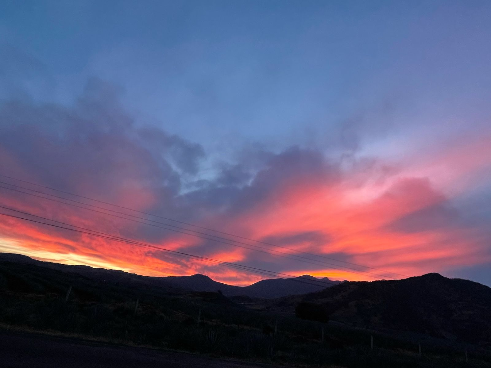
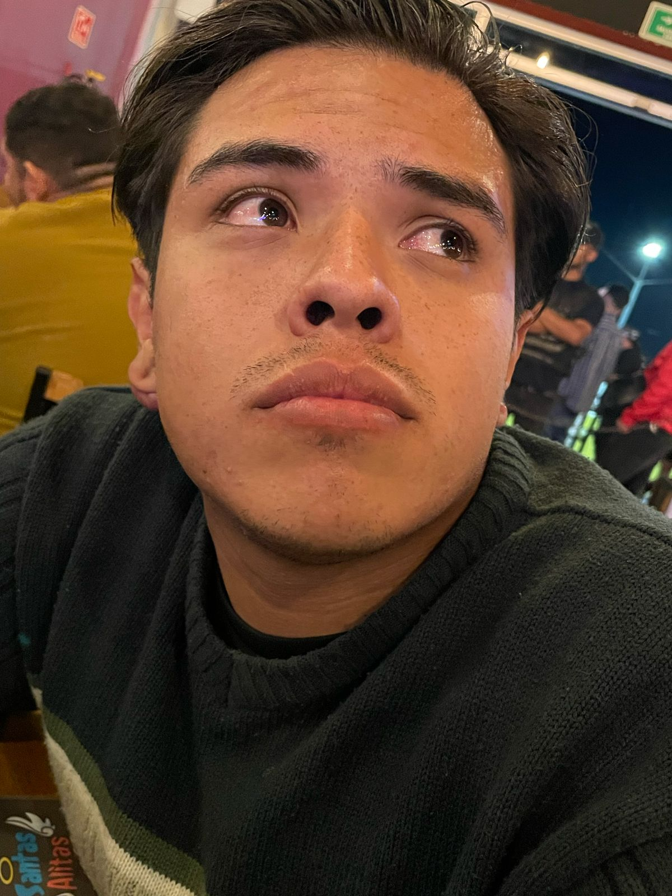

Esta fue la semana del cuento encantado. Lo que empezó como juego se convirtió en una historia que parecía sacada de un libro. Una princesa, un caballero, criaturas mágicas, portales, hechiceras… y lo más importante: nosotros dos como protagonistas. Escribimos juntos. Sentimos juntos. Y aunque el cuento tenía partes tristes, ambos sabíamos que el final, mientras estuvieramos de la mano, podía reescribirse. Esta semana fuiste mi compañia de lujo en una presentacion en la iglesis, nos tomamos una foto muy espectacular en el atardecer. Compramos un termo que deseaba mi cielo, tu! Y fuimos a unas alitas a escuchar un poco de musica y disfrutar mutuamente, te amo mucho, esa foto me la tomaste, y me dijiste que estabas enamorada, ese dia me mie de la emocion al leer eso
Momentos que derriten:
“En toda historia siempre hay un sol. Y ese sol eras tú.”
“Yo solo fui un planeta girando alrededor de tu protagonismo.”
🌹 Pequeños grandes sueños:
La manera en la que nos admiramos. Cómo jugamos con nuestras palabras hasta hacerlas poesía. Y cómo en cada renglón, lo que verdaderamente se estaba contando… era el inicio de un amor sincero.

